奥术学者（Arcanist）
定位：控场、法术爆发、地形操作。她围绕法力资源展开运作，擅长重排站位、聚怪、救援与高额法术爆发。
法力资源传送控场复杂
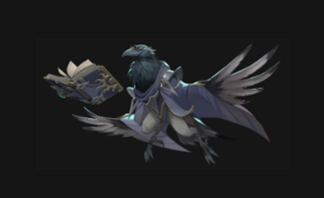
被动技能
奥术学者
每回合开始时获得 2 点法力。她的大量核心技能都需要消耗法力，因此节奏的关键在于先攒蓝，再把法力转化成传送、聚怪、爆发或残局收割。
专属机制
奥术学者的核心是“法力管理 + 传送位移 + 站位重排”。她不仅能自己跨越地形，还能把敌我单位直接传送到新位置，用于集火、救人、推坑和打乱怪物阵型。分身机制的释放时机要求也很高，必须判断什么时候用诱饵吃伤害、骗行动，或为镜像系技能铺垫收益。
技能清单与详细描述
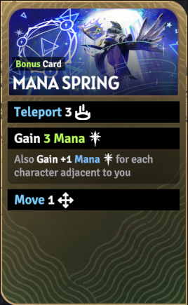
技能卡牌图
法力源泉（Mana Spring）
技能消耗：无
额外抽牌。
传送 3。
获得 1 / 2 / 3 点法力。
每有一个相邻角色，再额外获得 1 点法力。
再移动 1。
注：敌人也算相邻角色。
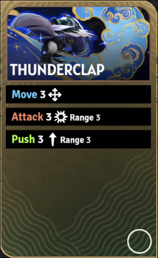
技能卡牌图
雷鸣震击（Thunderclap）
技能消耗：无
移动 3。
攻击 3（射程 3）。
推移 3（射程 3）。
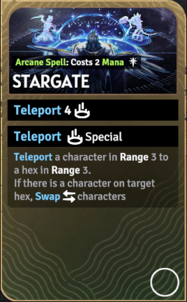
技能卡牌图
星门（Stargate）
技能消耗：消耗 2 点法力
传送 4。
对射程 3 内一个角色执行特殊传送。
将目标传送到另一个射程 3 的格子。
若目标格已有角色，则改为交换位置。
可用于把单位传送到坑位直接击杀。
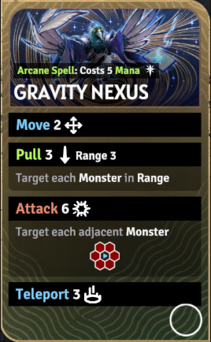
技能卡牌图
重力枢纽（Gravity Nexus）
技能消耗：消耗 5 点法力
移动 2。
拉拽 3（射程 3），影响范围内每个怪物。
对所有相邻怪物进行攻击 6。
传送 3。
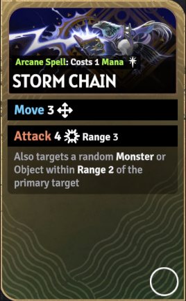
技能卡牌图
风暴链（Storm Chain）
技能消耗：消耗 1 点法力
移动 3。
攻击 4（射程 3）。
额外命中主目标 2 格范围内的一个随机怪物或物件。
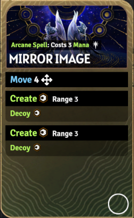
技能卡牌图
镜像分身（Mirror Image）
技能消耗：消耗 3 点法力
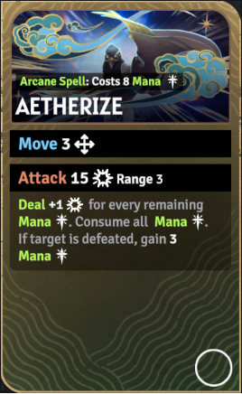
技能卡牌图
以太湮灭（Aetherize）
技能消耗：消耗 8 点法力
移动 3。
攻击 15（射程 3）。
每剩余 1 点法力，额外 +1 伤害。
随后消耗全部法力。
若击败目标，则回 3 点法力。
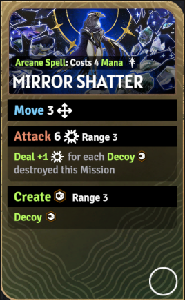
技能卡牌图
镜裂冲击（Mirror Shatter）
技能消耗：消耗 4 点法力
移动 3。
攻击 6（射程 3）。
按本任务中已被摧毁的诱饵数量追加伤害。
在射程 3 内再创建一个诱饵。
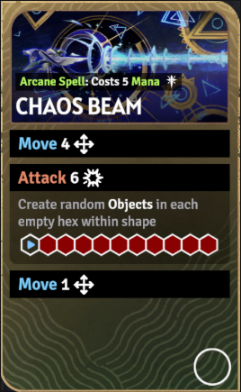
技能卡牌图
混沌射线（Chaos Beam）
技能消耗：消耗 5 点法力
移动 4。
攻击 6（直线 10 格范围）。
在形状内每个空格生成随机物件。
再移动 1。
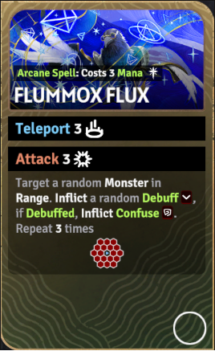
技能卡牌图
乱愚洪流（Flummox Flux）
技能消耗：消耗 3 点法力
传送 3。
攻击 3。
随机选取范围内怪物，附加随机减益。
若目标已带减益，则附加混乱。
重复 3 次。
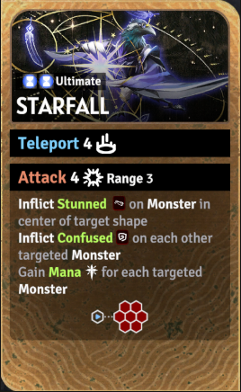
技能卡牌图
终极技·星坠（Starfall）
技能消耗：无
传送 4。
攻击 4 / 5 / 6（射程 3，小六边形范围）。
中心目标受到眩晕。
其他目标受到混乱。
按命中的怪物数量回复法力。
来源：奥术学者页面（Arcanist）。
推荐技能组合
输出爆发方向
推荐理由：先用雷鸣震击把目标调整到更好站位，再用风暴链补足连锁伤害，最后在法力充足时用以太湮灭完成高额单体斩杀。这组更偏纯输出与重点目标清除。
传送辅助方向
推荐理由：先用法力源泉补足资源，再用星门把关键目标或己方前排传送到合适站位，最后用重力枢纽完成聚怪和范围打击。这组兼顾资源、救援、控位和团队开团。
诱饵分身方向
推荐理由：先铺诱饵制造空间压力，再用镜裂冲击把诱饵价值转成额外伤害，最后接混沌射线补线性清场，适合处理中等密度怪群，也最能体现分身系玩法的节奏感。